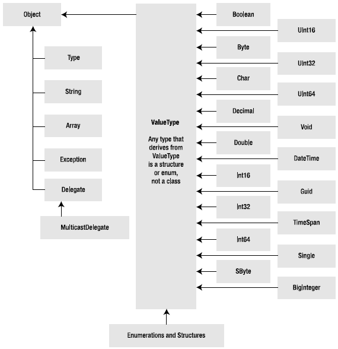
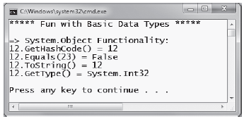
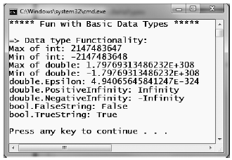

Like any programming language, C# defines an intrinsic set of fundamental data types, which are used to represent local variables, member variables, return values, and parameters. Unlike other programming languages, however, these keywords are much more than simple compiler-recognized tokens. Rather, the C# data type keywords are actually shorthand notations for full-blown types in the System namespace. Table 3-4 lists each system data type, its range, the corresponding C# keyword, and the type's compliance with the common language specification (CLS).
Note Recall from Chapter 1 that CLS-compliant .NET code can be used by any managed programming language. If you expose non'CLS-compliant data from your programs, other languages may not be able to make use of it.
Table 3-4. The Intrinsic Data Types of C#
| C# Shorthand | CLS Comliant? | System Type | Range | Meaning in Life |
|---|---|---|---|---|
| bool | Yes | System.Boolean | true or false | Represents truth or falsity |
| sbyte | No | System.SByte | -128 to 127 | Signed 8-bit number |
| byte | Yes | System.Byte | 0 to 255 | Unsigned 8-bit number |
| short | Yes | System.Int16 | -32,768 to 32,767 | Signed 16-bit number |
| ushort | No | System.UInt16 | 0 to 65,535 | Unsigned 16-bit number |
| int | Yes | System.Int32 | -2,147,483,648 to 2,147,483,647 | Signed 32-bit number |
| uint | No | System.UInt32 | 0 to 4,294,967,295 | Unsigned 32-bit number |
| long | Yes | System.Int64 | -9,223,372,036,854,775,808 to 9,223,372,036,854,775,807 | Signed 64-bit number |
| ulong | No | System.UInt64 | 0 to 18,446,744,073,709,551,615 | Unsigned 64-bit number |
| char | Yes | System.Char | U+0000 to U+ffff | Single 16-bit Unicode character |
| float | Yes | System.Single | DISPLAY PROPERLY | 32-bit floating point number |
| double | Yes | System.Double | DISPLAY PROPERLY | 64-bit floating point number |
| decimal | Yes | System.Decimal | DISPLAY PROPERLY | 96-bit floating point number |
| string | Yes | System.String | Limited by system memory | Represents a set of Unicdoe characters |
| Object | Yes | System.Object | Can store any data type in an object variable | The base class of all types in the .NET universe |
Note By default, a floating point number is treated as a double. To declare a float variable, use the suffix f or F to the raw numerical value (for example, 5.3F). As well, raw whole numbers default to an int data type. To set the underlying data type to a long, suffix l or L (4L).
Each of the numerical types, such as short or int, map to a corresponding structure in the System namespace. Simply put, structures are value types allocated on the stack. On the other hand, string and object are reference types, meaning the data stored in the variable is allocated on the managed heap. Understand that value types can be allocated into memory very quickly and have a fixed and predictable lifetime.
When you are declaring a local variable (e.g., a variable within a member scope), you do so by specifying the data type followed by the variable's name. To begin, create a new Console Application project named BasicDataTypes. Update the Program class with the following helper method that is called from within Main():
static void LocalVarDeclarations() { Console.WriteLine("=> Data Declarations:"); // Local variables are declared as so: // dataType varName; int myInt; string myString; Console.WriteLine(); }
Be aware that it is a compiler error to make use of a local variable before assigning an initial value. Given this, it is good practice to assign an initial value to your local data points at the time of declaration. You may do so on a single line, or by separating the declaration and assignment into two code statements.
static void LocalVarDeclarations() { Console.WriteLine("=> Data Declarations:"); // Local variables are declared and initialized as follows: // dataType varName = initialValue; int myInt = 0; // You can also declare and assign on two lines. string myString; myString = "This is my character data"; Console.WriteLine(); }
It is also permissible to declare multiple variables of the same underlying type on a single line of code, as in the following three bool variables:
static void LocalVarDeclarations() { Console.WriteLine("=> Data Declarations:"); int myInt = 0; string myString; myString = "This is my character data"; // Declare 3 bools on a single line. bool b1 = true, b2 = false, b3 = b1; Console.WriteLine(); }
Since the C# bool keyword is simply a shorthand notation for the System.Boolean structure, it is also possible to allocate any data type using its full name (of course, the same point holds true for any C# data type keyword). Here is the final implementation of LocalVarDeclarations().
static void LocalVarDeclarations() { Console.WriteLine("=> Data Declarations:"); // Local variables are declared and initialized as follows: // dataType varName = initialValue; int myInt = 0; string myString; myString = "This is my character data"; // Declare 3 bools on a single line. bool b1 = true, b2 = false, b3 = b1; // Use System data type to declare a bool. System.Boolean b4 = false; Console.WriteLine("Your data: {0}, {1}, {2}, {3}, {4}, {5}", myInt, myString, b1, b2, b3, b4); Console.WriteLine(); }
All intrinsic data types support what is known as a default constructor (see Chapter 5). This feature allows you to create a variable using the new keyword, which automatically sets the variable to its default value.
Note The BigInteger data type seen in the previous list is a new .NET 4.0 programming feature, which will be explained in just a bit.
Although it is more cumbersome to use the new keyword when creating a basic data type variable, the following is syntactically well-formed C# code:
static void NewingDataTypes() { Console.WriteLine("=> Using new to create variables:"); bool b = new bool(); // Set to false. int i = new int(); // Set to 0. double d = new double(); // Set to 0. DateTime dt = new DateTime(); // Set to 1/1/0001 12:00:00 AM Console.WriteLine("{0}, {1}, {2}, {3}", b, i, d, dt); Console.WriteLine(); }
It is very interesting to note that even the primitive .NET data types are arranged in a class hierarchy. If you are new to the world of inheritance, you will discover the full details in Chapter 6. Until then, just understand that types at the top of a class hierarchy provide some default behaviors that are granted to the derived types. The relationship between these core system types can be understood as shown in Figure 3-6.
Figure 3-6 The class hierarchy of system types
Notice that each of these types ultimately derive from System.Object, which defines a set of methods (e.g., ToString(), Equals(), GetHashCode()) common to all types in the .NET base class libraries (these methods are fully detailed in Chapter 6).
Also note that many numerical data types derive from a class named System.ValueType. Descendents of ValueType are automatically allocated on the stack and therefore have a very predictable lifetime and are quite efficient. On the other hand, types that do not have System.ValueType in their inheritance chain (such as System.Type, System.String, System.Array, System.Exception, and System.Delegate) are not allocated on the stack, but on the garbage-collected heap.
Without getting too hung up on the details of System.Object and System.ValueType , just understand that because a C# keyword (such as int) is simply shorthand notation for the corresponding system type (in this case, System.Int32), the following is perfectly legal syntax, given that System.Int32 (the C# int) eventually derives from System.Object and therefore can invoke any of its public members, as illustrated by this additional helper function:
static void ObjectFunctionality() { Console.WriteLine("=> System.Object Functionality:"); // A C# int is really a shorthand for System.Int32. // which inherits the following members from System.Object. Console.WriteLine("12.GetHashCode() = {0}", 12.GetHashCode()); Console.WriteLine("12.Equals(23) = {0}", 12.Equals(23)); Console.WriteLine("12.ToString() = {0}", 12.ToString()); Console.WriteLine("12.GetType() = {0}", 12.GetType()); Console.WriteLine(); }
If you were to call this method from within Main(), you would find the output shown in Figure 3-7.
Figure 3-7 All types (even numerical data) extend System.Object
To continue experimenting with the intrinsic C# data types, understand that the numerical types of .NET support MaxValue and MinValue properties that provide information regarding the range a given type can store. In addition to the MinValue/MaxValue properties, a given numerical system type may define further useful members. For example, the System.Double type allows you to obtain the values for epsilon and infinity (which may be of interest to those of you with a mathematical flare). To illustrate, consider the following helper function:
static void DataTypeFunctionality() { Console.WriteLine("=> Data type Functionality:"); Console.WriteLine("Max of int: {0}", int.MaxValue); Console.WriteLine("Min of int: {0}", int.MinValue); This book was purchased by max.sage@webitec.co.uk Console.WriteLine("Max of double: {0}", double.MaxValue); Console.WriteLine("Min of double: {0}", double.MinValue); Console.WriteLine("double.Epsilon: {0}", double.Epsilon); Console.WriteLine("double.PositiveInfinity: {0}", double.PositiveInfinity); Console.WriteLine("double.NegativeInfinity: {0}", double.NegativeInfinity); Console.WriteLine(); }
Next, consider the System.Boolean data type. The only valid assignment a C# bool can take is from the set {true | false}. Given this point, it should be clear that System.Boolean does not support a MinValue/MaxValue property set, but rather TrueString/FalseString (which yields the string "True" or "False", respectively). Add the following code statements to the DataTypeFunctionality() helper method:
Console.WriteLine("bool.FalseString: {0}", bool.FalseString); Console.WriteLine("bool.TrueString: {0}", bool.TrueString);
Figure 3-8 shows the output of invoking DataTypeFunctionality() from within Main().
Figure 3-8 Select functionality of various data types
C# textual data is represented by the string and char keywords, which are simple shorthand notations for System.String and System.Char, both of which are Unicode under the hood. As you may already know, a string represents a contiguous set of characters (e.g., "Hello"), while the char can represent a single slot in a string (e.g., 'H').
The System.Char type provides you with a great deal of functionality beyond the ability to hold a single point of character data. Using the static methods of System.Char, you are able to determine whether a given character is numerical, alphabetical, a point of punctuation, or whatnot. Consider the following method:
static void CharFunctionality() { Console.WriteLine("=> char type Functionality:"); char myChar = 'a'; Console.WriteLine("char.IsDigit('a'): {0}", char.IsDigit(myChar)); Console.WriteLine("char.IsLetter('a'): {0}", char.IsLetter(myChar)); Console.WriteLine("char.IsWhiteSpace('Hello There', 5): {0}", char.IsWhiteSpace("Hello There", 5)); Console.WriteLine("char.IsWhiteSpace('Hello There', 6): {0}", char.IsWhiteSpace("Hello There", 6)); Console.WriteLine("char.IsPunctuation('?'): {0}", char.IsPunctuation('?')); Console.WriteLine(); }
As illustrated in the previous code snippet, many members of System.Char have two calling conventions: a single character or a string with a numerical index that specifies the position of the character to test.
The .NET data types provide the ability to generate a variable of their underlying type given a textual equivalent (e.g., parsing). This technique can be extremely helpful when you wish to convert a bit of user input data (such as a selection from a GUI-based, drop-down list box) into a numerical value. Consider the following parsing logic within a method named ParseFromStrings():
static void ParseFromStrings() { Console.WriteLine("=> Data type parsing:"); bool b = bool.Parse("True"); Console.WriteLine("Value of b: {0}", b); double d = double.Parse("99.884"); Console.WriteLine("Value of d: {0}", d); int i = int.Parse("8"); Console.WriteLine("Value of i: {0}", i); char c = Char.Parse("w"); Console.WriteLine("Value of c: {0}", c); Console.WriteLine(); }
The System namespace defines a few useful data types for which there is no C# keyword, such as the DateTime and TimeSpan structures (I'll leave the investigation of System.Guid and System.Void, as shown in Figure 3-6, to interested readers).
The DateTime type contains data that represents a specific date (month, day, year) and time value, both of which may be formatted in a variety of ways using the supplied members. The TimeSpan structure allows you to easily define and transform units of time using various members.
static void UseDatesAndTimes() { Console.WriteLine("=> Dates and Times:"); // This constructor takes (year, month, day) DateTime dt = new DateTime(2010, 10, 17); // What day of the month is this? Console.WriteLine("The day of {0} is {1}", dt.Date, dt.DayOfWeek); // Month is now December. dt = dt.AddMonths(2); Console.WriteLine("Daylight savings: {0}", dt.IsDaylightSavingTime()); // This constructor takes (hours, minutes, seconds) TimeSpan ts = new TimeSpan(4, 30, 0); Console.WriteLine(ts); // Subtract 15 minutes from the current TimeSpan and // print the result. Console.WriteLine(ts.Subtract(new TimeSpan(0, 15, 0))); }
.NET 4.0 introduces a new namespace named System.Numerics, which defines a structure named BigInteger. As its name implies, the BigInteger data type can be used when you need to represent humongous numerical values (sadly, such as the national debt of the United States), which are not constrained by a fixed upper or lower limit.
Note The System.Numerics namespace defines a second structure named Complex, which allows you to model mathematically complex numerical data (e.g., imaginary data, real data, hyperbolic tangents). Consult the .NET Framework 4.0 SDK documentation if you are interested.
While many of your .NET applications may never need to make use of the BigInteger structure, if you do find the need to define a massive numerical value, your first step is to reference the System.Numerics.dll assembly into your project. If you wish to follow along with the current example, perform the following tasks:
Once you have done so, add the following using directive to the file, which will be using the BigInteger data type:
// BigInteger lives here! using System.Numerics;
At this point, you can create a BigInteger variable using the new operator. Within the constructor you can specify a numerical value, including floating point data. However, recall that when you define a literal whole number (such as 500), the runtime will default the data type to an int. Likewise, literal floating point data (such as 55.333) will default to a double. How, then, can you set BigInteger to a massive value while not overflowing the default data types used for raw numerical values?
The simplest approach is to establish the massive numerical value as a text literal, which can be converted into a BigInteger variable via the static Parse() method. If required, you can also pass in a byte array directly to the constructor of the BigInteger class.
Note Once you assign a value to a BigInteger variable, you cannot change it, as the data is immutable. However, the BigInteger class defines a number of members that will return new BigInteger objects based on your data modifications (such as the static Multiply() method used in the proceeding code sample).
In any case, once you have defined a BigInteger variable, you will find this class defines very similar members as other intrinsic C# data types (e.g., float, int). In addition, the BigInteger class defines several static members that allow you to apply basic mathematical expressions (such as adding and multiplying) to BigInteger variables. Here is an example of working with the BigInteger class.
static void UseBigInteger() { Console.WriteLine("=> Use BigInteger:"); BigInteger biggy = BigInteger.Parse("9999999999999999999999999999999999999999999999"); Console.WriteLine("Value of biggy is {0}", biggy); Console.WriteLine("Is biggy an even value?: {0}", biggy.IsEven); Console.WriteLine("Is biggy a power of two?: {0}", biggy.IsPowerOfTwo); BigInteger reallyBig = BigInteger.Multiply(biggy, BigInteger.Parse("8888888888888888888888888888888888888888888")); Console.WriteLine("Value of reallyBig is {0}", reallyBig); }
It is also important to note that the BigInteger data type responds to C#'s intrinsic mathematical operators, such as +, -, and *. Therefore, rather than calling BigInteger.Multiply() to multiply two huge numbers, you could author the following code:
BigInteger reallyBig2 = biggy * reallyBig;
At this point, I hope you understand that the C# keywords representing basic data types have a corresponding type in the .NET base class libraries, each of which exposes a fixed functionality. While I have not detailed each member of these data types, you are in a great position to dig into the details as you see fit. Be sure to consult the .NET Framework 4.0 SDK documentation for full details regarding the various .NET data types.
Source Code The BasicDataTypes project is located under the Chapter 3 subdirectory.